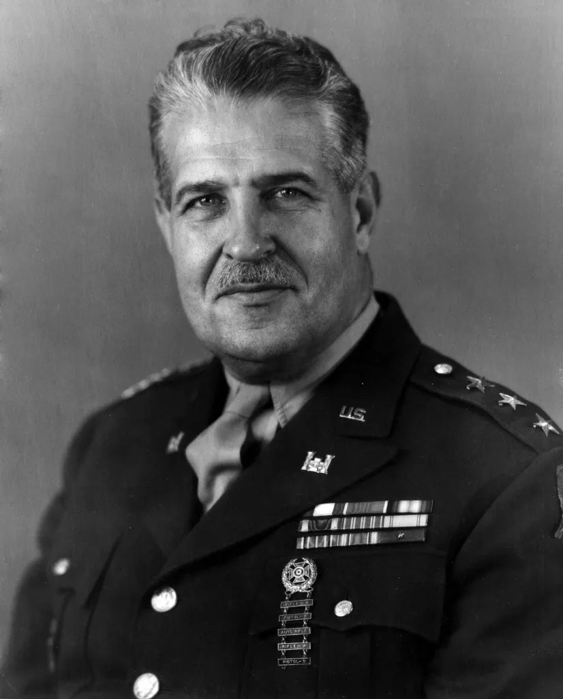
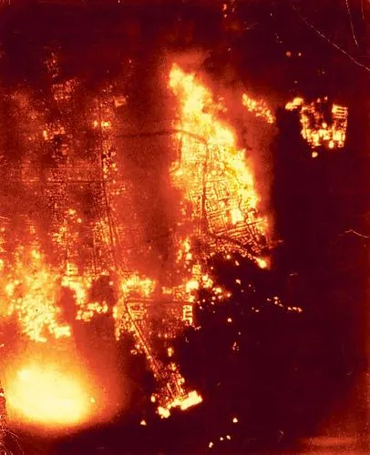
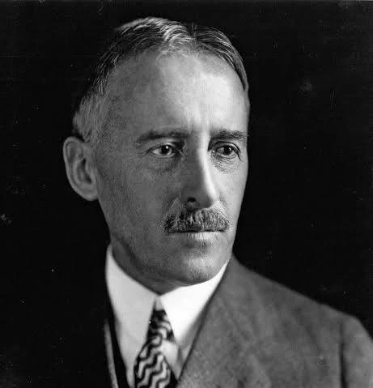

(트루먼 대통령)
원폭 쏴야하는데 어디다 쏠지 결정해봐라

(레슬리 그로브스 소장, 맨해튼 계획 책임자)
음 보자... 근데 쏠데가 마땅치 않은데요?
뭔소리여

이미 폭격 ㅈㄴ해서 할만한데가 마땅치않음 ㅇㅇ...
그나마 남은데가 교토랑 히로시마..가 1순위
다른데는 요코하마랑 고쿠라, 나가사키, 니가타가 있겠네요
(커티스 르메이, 미국 제8공군 지휘관)- 베트남전 당시 '석기시대로 만들어야함' 이라는 말로 유명함
일본놈들 정신적 수도인 교토를 폭격해야 얼이 빠질거아니요
빨리 나머지들 쳐서 이 전쟁을 끝내야 한다고 생각합니다

(헨리 스팀슨, 미국 국방부 장관)
교토는 ㄴㄴ
내가 거기 여행가보니까 문화유산 이쁘고 좋더라
그리고 일본인들이 교토를 정신적 수도로 여기던데 거기 폭격했다가 결사항전하면 귀찮을듯한데 거기 말고 딴데하죠
음...생각해보니 그말이 맞다
교토 제외하고 폭격 ㄱㄱ
이런이유로 교토는 원폭을 맞지 않을 수 있게 되었다
폭격을 맞지 않음으로써 일본의 문화유산은 지켜졌지만 도쿄를 방문하는 세계 각국의 여행자들이 도쿄화법에 정신을 못차리게 됐으니 이것또한 아이러니 아닐까
댓글
수집 당시 댓글 86개
ㅇㅇ · 11.17 20:08:09
ㅇㅇ · 11.17 20:33:07
ㅇㅇ · 11.21 07:32:34
· ㅇㅇ · 11.21 07:34:45
· ㅇㅇ · 11.21 09:05:34
· Cutebug · 11.21 09:38:23
히이잉 · 11.21 07:33:06
ㅇㅇ · 11.21 07:34:06
ㅇㅇ · 11.21 07:34:18
ㅇㅇ · 11.21 07:35:43
ㅇㅇ · 11.21 07:35:45
ㅇㅇ · 11.21 07:35:54
ㅇㅇ · 11.21 07:35:54
새로뜬달 · 11.21 07:37:00
SonyXperia · 11.21 07:37:09
ㅇㅇ · 11.21 07:38:41
ㅇㅇ · 11.21 07:38:48
1111 · 11.21 07:39:28
· ㅇㅇ · 11.21 07:42:11
· ㅇㅇ · 11.21 07:46:28
· ㅇㅇ · 11.21 08:39:50
· ㅇㅇ · 11.21 09:46:36
ㅇㅇ · 11.21 07:44:32
2456778 · 11.21 07:45:36
· ㅇㅇ · 11.21 07:47:06
ㅇㅇ · 11.21 07:46:32
ㅇㅇ · 11.21 07:48:47
ㅇㅇ · 11.21 07:50:21
ㅇㅇ · 11.21 07:51:51
ㅇㅇ · 11.21 07:53:06
· ㅇㅇ · 11.21 07:58:00
· ㅇㅇ · 11.21 08:10:40
· ㅇㅇ · 11.21 08:11:31
· ㅇㅇ · 11.21 08:17:45
· ㅇㅇ · 11.21 08:19:52
· ㅇㅇ · 11.21 08:24:05
· ㅇㅇ · 11.21 08:37:49
· ㅇㅇ · 11.21 10:18:07
· ㅇㅇ · 11.21 10:32:49
· ㅇㅇ · 11.21 10:39:52
· ㅇㅇ · 11.21 10:41:58
· ㅇㅇ · 11.21 10:43:31
· ㅇㅇ · 11.21 10:43:45
· ㅇㅇ · 11.21 10:47:58
· ㅇㅇ · 11.21 10:49:43
· ㅇㅇ · 11.21 11:01:52
· ㅇㅇ · 11.21 11:07:46
ㅇㅇ · 11.21 08:00:09
· ㅇㅇ · 11.21 08:00:39
· ㅇㅇ · 11.21 08:01:22
· ㅇㅇ · 11.21 08:19:07
히이잉 · 11.21 08:01:07
ㅇㅇ · 11.21 08:11:40
마인츠05 · 11.21 08:17:59
씹덕1022일차 · 11.21 08:19:09
ㅇㅇ · 11.21 08:31:06
히이잉 · 11.21 08:39:08
시모 · 11.21 08:41:30
ㅇㅇ · 11.21 08:43:03
· ㅇㅇ · 11.21 08:43:35
211.177 · 11.21 08:46:39
ruetsch. · 11.21 08:49:39
ㅇ · 11.21 08:51:33
· ㅇㅇ · 11.21 10:41:45
Doll · 11.21 08:51:58
ㅇㅇ · 11.21 08:54:16
ㅇㅇ · 11.21 08:58:14
ㅇㅇ · 11.21 09:01:02
ㅇㅇ · 11.21 09:05:58
ㅇㅇ · 11.21 09:07:45
· ㅇㅇ · 11.21 09:47:44
Japan_ · 11.21 09:27:33
ㅇㅇ · 11.21 09:31:13
통통따리 · 11.21 09:31:37
히이잉 · 11.21 09:35:08
211.108 · 11.21 09:35:19
つついあやめのおっと · 11.21 09:36:35
ㅇㅇ · 11.21 09:41:12
ㆁㆁ · 11.21 10:06:39
ㅇㅇ · 11.21 10:12:25
ㅇㅇ · 11.21 11:20:48
ㅇㅇ · 11.21 11:27:43
내똥집엔크리넥스 · 11.21 11:29:35
ㅇㅇ · 11.21 11:43:55
· ㅇㅇ · 11.21 11:48:19
ㅇㅇ · 11.21 11:45:16